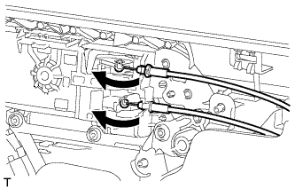

DOOR COURTESY LIGHT (for Front) > REMOVAL |
| 1. REMOVE FRONT DOOR LOWER FRAME BRACKET GARNISH LH |
 |
Detach the 2 clips and remove the front door lower frame bracket garnish LH.
| 2. REMOVE FRONT DOOR INSIDE HANDLE BEZEL PLUG LH |
 |
Using a moulding remover, detach the 3 claws and remove the inside handle bezel as shown in the illustration.
| 3. REMOVE FRONT ARMREST ASSEMBLY LH |
 |
Using moulding remover B, detach the 7 claws and 7 guides, and remove the front armrest assembly as shown in the illustration.
| 4. REMOVE MULTIPLEX NETWORK MASTER SWITCH ASSEMBLY |
 |
Using a moulding remover B, detach the 2 clips, 4 claws and guide as shown in the illustration.
Disconnect the connector and remove the power window regulator master switch assembly with front door armrest base panel.
| 5. REMOVE FRONT DOOR TRIM BOARD SUB-ASSEMBLY LH |
 |
Remove the 2 screws.
Remove the 12 clips.
 |
Pull out the front door trim board sub-assembly in the direction indicated by the arrow in the illustration.
| *1 | Reference Boss |
Raise the front door trim board sub-assembly to detach the 4 claws and remove the front door trim board sub-assembly together with the front door inner glass weatherstrip LH.
Disconnect the 2 connectors.
|  |
Disconnect the front door lock remote control cable assembly and front door inside locking cable assembly.
| 6. REMOVE FRONT DOOR INNER GLASS WEATHERSTRIP LH |
 |
Using a screwdriver, detach the 4 claws and remove the front door inner glass weatherstrip from the front door trim board sub-assembly as shown in the illustration.
| 7. REMOVE COURTESY LIGHT ASSEMBLY |
 |
Detach the 2 claws and remove the light.
Disconnect the connector.
| 8. REMOVE COURTESY LIGHT BULB |
Remove the bulb.